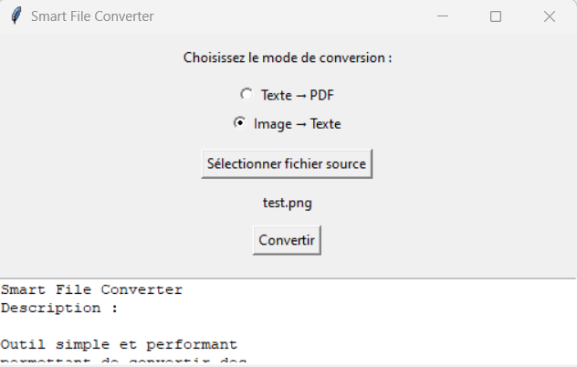

Mes Projets

CV Generator (Python)
Application Python avec interface graphique pour créer automatiquement un CV au format HTML à partir des données saisies via un formulaire simple et intuitif.
Voir plus

Smart File Converter
Convertisseur polyvalent de fichiers texte en PDF et d’images en texte grâce à l’OCR, avec interface graphique simple et efficace.
Voir plusFlask Weather Dashboard
A modern web app that displays real-time weather data for multiple cities using the OpenWeather API.
Voir plus